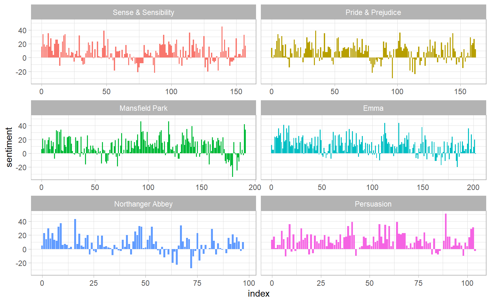

2.2 Sentiment analysis with inner join
library(janeaustenr)
tidy_books <- austen_books() %>%
group_by(book) %>%
mutate(linenumber = row_number(),
chapter = cumsum(str_detect(text, regex("^chapter [\\divxlc]",
ignore_case = TRUE)))) %>%
ungroup() %>%
unnest_tokens(word, text)
tidy_books
#> # A tibble: 725,055 x 4
#> book linenumber chapter word
#> <fct> <int> <int> <chr>
#> 1 Sense & Sensibility 1 0 sense
#> 2 Sense & Sensibility 1 0 and
#> 3 Sense & Sensibility 1 0 sensibility
#> 4 Sense & Sensibility 3 0 by
#> 5 Sense & Sensibility 3 0 jane
#> 6 Sense & Sensibility 3 0 austen
#> # ... with 7.25e+05 more rowsBecause we name the count column word in unnest_tokens(), it’s convenient to join with the sentiment dataset:
nrc_joy <- get_sentiments("nrc") %>%
filter(sentiment == "joy")
tidy_books %>%
filter(book == "Emma") %>%
inner_join(nrc_joy) %>%
count(word, sort = TRUE)
#> # A tibble: 303 x 2
#> word n
#> <chr> <int>
#> 1 good 359
#> 2 young 192
#> 3 friend 166
#> 4 hope 143
#> 5 happy 125
#> 6 love 117
#> # ... with 297 more rowsNext, we count up how many positive and negative words there are in defined sections of each book. We define an index here to keep track of where we are in the narrative; this index (using integer division) counts up sections of 80 lines of text.
jane_austen_sentiment <- tidy_books %>%
inner_join(get_sentiments("bing")) %>%
mutate(index = linenumber %/% 80) %>%
count(book, index, sentiment) %>%
pivot_wider(names_from = sentiment, values_from = n, values_fill = list(n = 0)) %>%
mutate(sentiment = positive - negative)
jane_austen_sentiment
#> # A tibble: 920 x 5
#> book index negative positive sentiment
#> <fct> <dbl> <int> <int> <int>
#> 1 Sense & Sensibility 0 16 32 16
#> 2 Sense & Sensibility 1 19 53 34
#> 3 Sense & Sensibility 2 12 31 19
#> 4 Sense & Sensibility 3 15 31 16
#> 5 Sense & Sensibility 4 16 34 18
#> 6 Sense & Sensibility 5 16 51 35
#> # ... with 914 more rowsggplot(jane_austen_sentiment) +
geom_col(aes(index, sentiment, fill = book), show.legend = F) +
facet_wrap( ~ book, ncol = 2, scales = "free_x") 